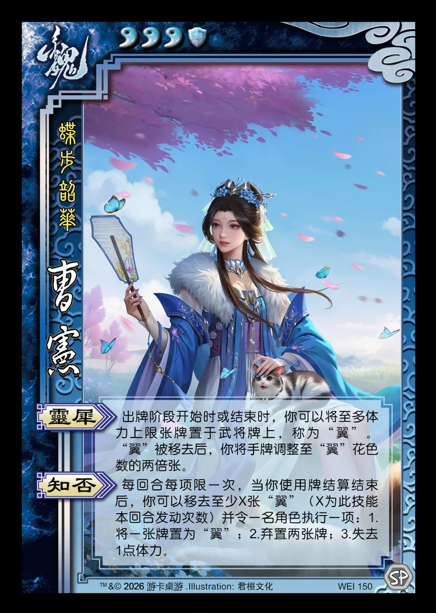

点击卡面查看大图
魏
曹宪
♥3 ⛨1蝶步韶华
灵犀
出牌阶段开始时或结束时，你可以将至多体力上限张牌置于武将牌上，称为“翼”。“翼”被移去后，你将手牌调整至“翼”花色数的两倍张。
知否
每回合每项限一次，当你使用牌结算结束后，你可以移去至少X张“翼”（X为此技能本回合发动次数）并令一名角色执行一项：1.将一张牌置为“翼”；2.弃置两张牌；3.失去1点体力。

点击卡面查看大图
蝶步韶华
出牌阶段开始时或结束时，你可以将至多体力上限张牌置于武将牌上，称为“翼”。“翼”被移去后，你将手牌调整至“翼”花色数的两倍张。
每回合每项限一次，当你使用牌结算结束后，你可以移去至少X张“翼”（X为此技能本回合发动次数）并令一名角色执行一项：1.将一张牌置为“翼”；2.弃置两张牌；3.失去1点体力。